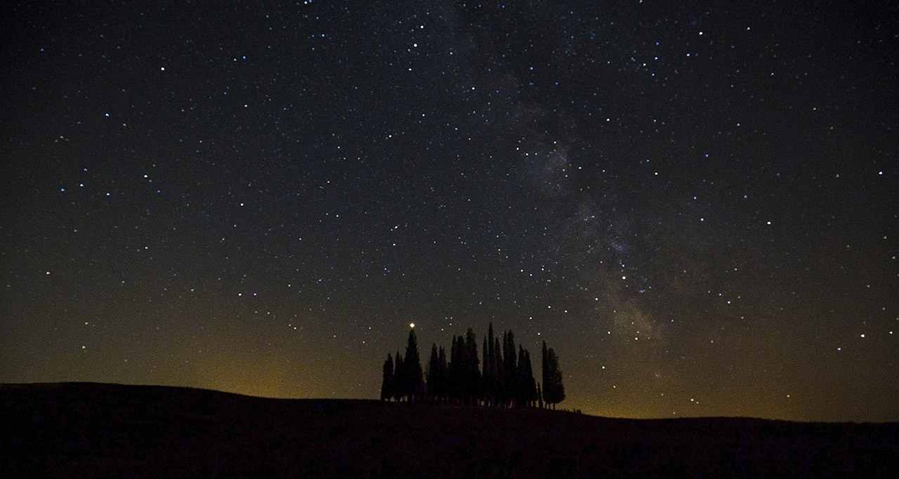
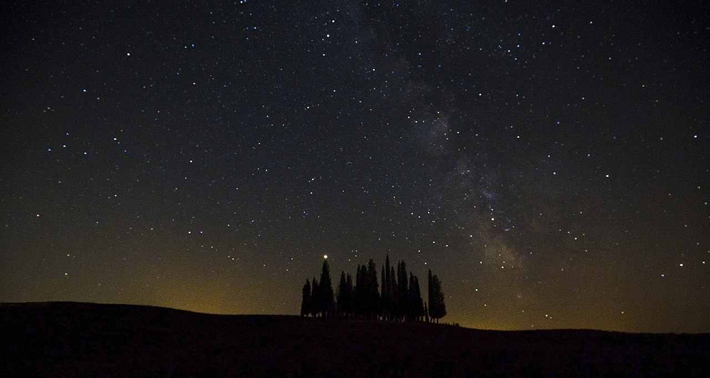

MR Photos
Post-processing tutorials
In this section, I show some of my raw photos and how they look after post-processing.
Remember that post-processing is fun but it can only enhance the potential of an already good shot,
it cannot substitute lenses, filters, and shooting techniques.
Do not trust those that say that photography is just art, I personally belive that the merit of a good photo
is generally 10% of the camera, 10% of the lens, 10% of the other accessories (ex. filters), 10% of post-processing,
10% of the choice of the location, 10% of the choice of the time of the day, 10% of the weather conditions, 10% of
the ability to adapt to unexpected conditions and only 20% of the choice of the subject and composition. You can be
in the dream place with a dream shot in mind, but without the correct equipment and luck you will likely be disappointed!
Tuscanian Milky way
 

Camera: Canon EOS 5D Mark III, Lens: Canon EF 16-35mm f/4L IS USM, Setup: 16mm-f4-20s-ISO 2500
Sunrise at Podere Belvedere
Camera: Canon EOS 5D Mark III, Lens: Canon EF 100-400mm f/4.5-5.6L IS II USM, Setup: 135mm-f32-1/15s-ISO 50